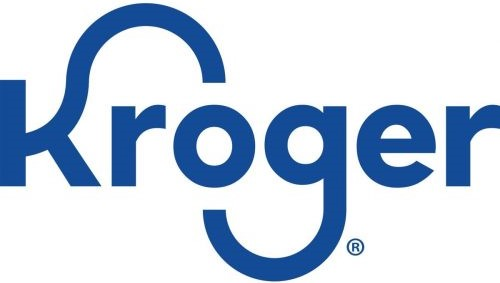
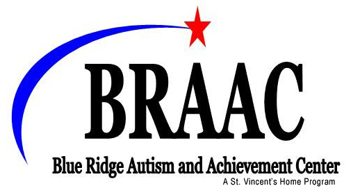

Resume
Hello! My name is Warren Morrison.
If you're on this page, then you are probably looking for a more traditional view of my professional experience
and education. If you prefer the familiarity of LinkedIn, feel free visit
my profile there. It has
largely the
same information as what you'll find below.
Let me know if there is something awesome that you would like to achieve
together!
Master of Science in Economics
Purdue University
Expected in 2023
Foci: Business and Data Analytics, Financial Econometrics
Studies have taken place in parallel with my current role at Bank of America
70% of coursework completed
Master of Information Technology
Virginia Polytechnic Institute and State University
2015
Foci: Information Security, Business Information Systems, Healthcare Systems
Bachelor of Arts
Lee University
2011
Majors: Political Science and Sociology (double major)
Minor: Religion
President of Alpha Kappa Delta (National Sociology Honor Society)
Member of Pi Sigma Alpha (National Political Science Honor Society)
Vice President, Secretary, and Treasurer of the Sociology Club
Google Data Analytics Professional Certificate
Google
Expected in November of 2023
Coursework:
- Foundations: Data, Data, Everywhere
- Ask Questions to Make Data-Driven Decisions
- Prepare Data for Exploration
- Process Data from Dirty to Clean
- Analyze Data to Answer Questions
- Share Data Through the Art of Visualization
- Data Analysis with R Programming
- Google Data Analytics Capstone: Complete a Case Study
SAFe Certified Scrum Master
Scaled Agile, Inc.
2018
Credential ID 35761176-6602
Splunk Power User Certification
Splunk
2016
Credential ID Cert-110217
Skills
Python; Java; SQL; HTML; CSS; JavaScript; quantitative research; strategic planning; strategic partnerships;
leadership; relationship management; change management; incident management; problem management; program
management; project management; agile development methodology
Vice President
Bank of America
March 2019 - Present
As a Vice President, I performed the tasks of a wide variety of roles, including that of a portfolio manager,
program manager, project manager, and release manager. These tasks include, but are certainly not limited
to:
- While performing as a portfolio manager, I oversaw ~15 technology programs and ~75 projects within those:
-
- Developed portfolio alignment strategy
- Curated and developed relationships across all lines of business
- Continuous portfolio analysis
- Ensured adherence to change management standards
- Trained new program and project managers
- Created and presented reports to executives
- Strategic planning, negotiation, and direction
- Served as a volunteer leader for the company's work with Habitat for Humanity
- Member of the Employee Engagement Council
- Coordinator for a tool review and upgrade committee:
-
- Identification of tool and process improvement opportunities and solutions
- Implementation of proofs of concept
- Management of tool implementation in production environment
- SIAI (Self-identified audit issue) identification, creation, mitigation, and compliance
- Managed the merging of two high-profile tools via a multi-LOB effort
- Participated in strategy discussions, proofs of concept, and user acceptance testing (UAT) for an internal
program and project management system of record
- Provided advisement on change management to executives
- Consistent recognition as the foremost subject matter expert on all things related to change management in a
rapidly changing regulatory environment
- Consistently received recognition for being able to successfully explain complex concepts to broad audiences
- Successfully bridged many gaps between business and technology teams
- Managed agile methodology adoption
- Managed project for data control layer development, amongst others
- Managed financial forecasts, conducted variance research, and mitigated risks
Vice President
Bank of America
December 2017 - March 2019
As a Vice President, I performed a wide variety of tasks including, but certainly not limited to:
- Created and maintained a technology release calendar
- Managed code deployment freeze event exceptions
- Facilitated an executive committee for change management reviews
- Project manager for Volcker rule, Regulation W, and Information Barrier
- Provided strategic advisement for release management team
- Designed and implemented reports and metrics for change and release management
- Managed agile methodology adoption
- Managed budget forecasts, variance research, and risk mitigation for multimillion-dollar projects
- SAFe Scrum Master training and observation
- Administrator of team collaboration tools
- Policy compliance enforcement
- Risk management and mitigation
- Successfully bridged many gaps between business and technology teams
- Consistently received recognition for being able to successfully explain complex concepts to broad audiences
- Initiated, designed, and presented change management training sessions to hundreds of employees across the
enterprise from a variety of backgrounds and roles
- Provided technical expertise to non-technical teams
- Created and maintained process documentation and training for technology change management
- Technical writing on a variety of topics
Vice President
Bank of America
September 2016 - December 2017
As a Vice President, I performed a wide variety of tasks including, but certainly not limited to:
- Coordination and approval of infrastructure, code, and other technology changes
- Streamlined code change process
- User access management
- Provided training to employees on areas of expertise
- Technical writing on a variety of topics
- Facilitator for an Executive Committee that reviewed technology changes from end to end
- Managed code deployment freeze event exceptions
- Performed QA duties for technology change deployment requests and documentation
- Risk management and mitigation
- Gathered, analyzed, and reported on data regarding the technology change process
- Ensured consistency of technology change process across all teams
- Administrator for team collaboration tools
Application Production Support Analyst
Bank of America (via Matlen Silver)
November 2015 - September 2016
As an Application Production Support Analyst, I performed a wide variety of tasks including, but certainly
not limited to:
- Coordination and deployment of code and database changes
- Disaster recovery exercises, support, and execution
- Environment management and synchronization
- Diagnosed and resolved technology incidents and problems
- Elevated security account access
- Declining/not permitted technology remediation
- User access management
- Trained employees in areas of expertise
- Technical writing on a variety of topics for a wide-ranging audience
Owner
Pens For A Cause
September 2016 - December 2017
Sales in 22 countries across 4 continents
As the lead woodworker and business lead, I performed a variety of roles, a few highlights of which are:
- System Administrator:
-
- Managed the system and optimized its performance while minimizing cost
- Custom built desktops while ensuring that the overall system design allowed for compatibility across all
devices
- Managed, maintained backups, and performed troubleshooting procedures for desktops, laptops, tablets,
smart phones, printers, and other devices
- Set up point of sale system and trained users
- Managed operating system and software selection, updates, and upgrades
- Ensured network security and efficiency utilizing both wired and wireless technologies
- Webmaster:
-
- Utilized HTML, CSS, and JavaScript to design, develop, and maintain the e-commerce website
- Ensured browser compatibility to maximize the number of potential viewers
- Utilized various internet marketing techniques to drive traffic to the website
- Incorporated Google Analytics for accurate and detailed site traffic data
- Database Administrator:
-
- Designed, developed, and maintained a relational database utilizing MySQL that actively kept track of
materials, products, and sales
- Designed and wrote efficient SQL queries to provide the database user with exactly the data that they
needed to maximize business value
- Maintained database security and integrity by implementing disaster management and authorization
management techniques
- Data Analyst:
-
- Extracted data from multiple internal sources to gain advantageous insights for various aspects of the
business
- Compiled, organized, and modeled data and insights derived from such data in a manner that is easy to
understand for IT professionals and non-IT professionals alike
Owner
Morrison Genealogical Research
September 2010 - December 2011
Lead genealogist and responsible for running the business
Research Assistant
Lee University
January 2011 - May 2011
Engaged students in a Timed Repetitive Quizzes study
Teaching Assistant
Lee University
August 2010 - December 2010
Teaching Assistant for SOCI-461 History of Sociological Theory

Cashier
The Kroger Company
June 2005 - Aug 2010
Cashier; Customer Service Representative; Floor Supervisor; stocked shelves; other related work
Intern
Starnes, Roberts, & Associates
January 2010 - May 2010
Undergraduate internship to explore the daily operations of a law firm
Intern
April Randle Law Office
September 2009 - January 2010
Undergraduate internship to explore the daily operations of a law firm

Summer Camp Assistant
Blue Ridge Autism Center
June 2009 - July 2009
Responsible for daily interaction with Autistic children.
Note: the organization is now called the Blue Ridge Autism & Achievement Center.
Resident Assistant
Lee University
August 2008 - June 2009
Responsible for a hall of about 20 freshmen; community development; health and safety inspections; fire safety
training; special situation training; event planning; dispute resolution; other related work